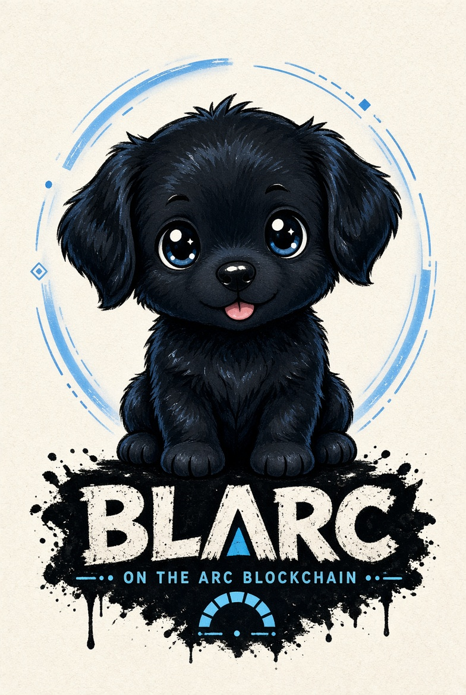
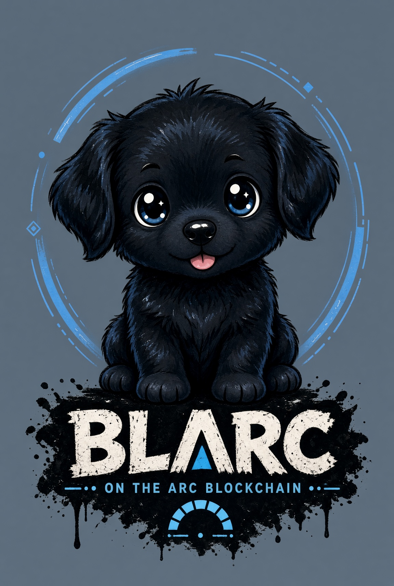

Cashback
Rebate-friendly fee accounting designed to reward repeat trading volume.

BLARC LaunchDirectly on Telegram
BLARC brings sniping, copy trading, limit orders, wallet alerts, token scanning, and cross-chain execution into one focused Telegram workflow.

BLARC Bot
Built as a Telegram-first control surface, BLARC keeps the workflows traders repeat all day within reach: buy, sell, monitor, bridge, protect, and automate.
Core Features
Rebate-friendly fee accounting designed to reward repeat trading volume.
Preset launch entries with max spend, slippage, gas, and token checks.
Track selected wallets and mirror buys or sells with your own risk limits.
Trigger buys or exits when price, liquidity, or market-cap conditions hit.
Route trades across up to ten wallet lanes without leaving Telegram.
Turn trusted call channels into guarded trade prompts and auto-buys.
Follow live PnL, taxes, approvals, stops, take-profits, and open orders.
Split, consolidate, bridge, and send funds with clear confirmation steps.
Move between supported networks through a single guided flow.
Detect contract addresses from channels and groups in real time.
Lifetime referral tracking for builders, callers, and communities.
Always-on help paths for setup, recovery, and product questions.
Ecosystem
BLARC Scraper
Desktop and Telegram-aware scraping for contract addresses, duplicate detection, per-channel rules, and safe forwarding into guarded BLARC entries.
BLARC Wallet Bot
Monitor Arc, EVM, and Solana wallets with balance snapshots, threshold alerts, allowance reminders, and portfolio movement summaries.
BLARC Whale Bot
Watch wallets that matter, receive transaction alerts, inspect token risk, and decide whether to follow, fade, or ignore movement.
BLARC Buy Bot
Buy and sell alerts, token panels, chart shortcuts, branded notifications, and moderation-friendly settings for active crypto communities.
Security Architecture
BLARC’s public frontend is static and intentionally contains no private keys, seed phrases, custodial logic, analytics trackers, or third-party scripts. Product messaging emphasizes guarded automation, explicit confirmations, and operational hygiene.
Encourage dedicated trading wallets, spend ceilings, and revocable approvals.
Support private routing, slippage caps, deadblock checks, and sandwich-risk warnings.
Surface liquidity, tax, owner, blacklist, honeypot, and mint authority signals.
Use official links, signed release notes, clone warnings, and no backup-bot claims.
Docs
Token buys and sells, snipes, copy trades, limit orders, wallet monitoring, contract forwarding, bridge actions, and community buy alerts.
Seed phrases, private keys, recovery codes, Telegram login codes, and exchange credentials should never be shared in chat or support tickets.
No. BLARC is a tooling interface concept. DeFi trading is high risk and users remain responsible for their own decisions and local compliance.